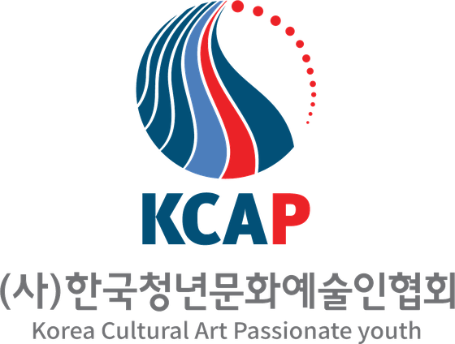

목적설립 목적
혼자가 아니라
함께 만드는 예술
우리나라에는 꿈을 가진 청년 문화예술인이 많지만, 그 꿈을 이어갈 기반은 여전히 약합니다. 창작은 뜻 있는 예술가들이 함께 연대할 때 힘을 얻습니다.
그래서 청년 문화예술인들이 가진 정보와 자료를 온·오프라인으로 나누고, 협업으로 자생력을 키우는 플랫폼으로 사단법인을 세웠습니다. 청년 문화예술인의 창작활동과 문화예술산업 발전에 기여하고, 권익과 사회적 인식을 높이는 것이 협회의 목적입니다.
자립에 어려움을 겪는 전국의 청년 예술가들이 공생하는 둥지가 되어, 사회로 나아갈 날개를 달아주고자 합니다.
정관상 사업정관상 사업
- 문화예술 체험학습 및 교육사업
- 국가 및 지역발전을 위한 문화사업
- 문화예술 정보제공, 홍보 및 자료관리를 위한 전산망 구축 및 운영
- 기타 위 각 호에 부대하는 사업
- 법인명
- 사단법인 한국청년문화예술인협회
- 영문명
- Korea Cultural Art Passionate youth (KCAP)
- 설립허가
- 2018. 2. 5. 전라남도 제326호 (문화체육관광부 소관)
- 창립총회
- 2018. 1. 6.
- 회장
- 김세진 (제2대, 2021~)
- 주사무소
- 전라남도 강진군 대구면 청자촌길 20-14
- 고유번호
- 203-82-04635
비전비전
“함께, 더 멀리!!”
청년 문화예술인의 권익을 지키고 사회적 인식을 높여, 젊은 예술가들이 건강하게 성장할 수 있는 플랫폼을 만듭니다. 사는 곳이나 형편 때문에 창작을 멈추는 청년 예술가가 없도록, 회원과 함께 길을 냅니다.
미래를 위한 도전
- 한국 청년 문화예술인의 가치 창출
- 문화예술의 소통 플랫폼 조성
- 청년들의 창업 지원 역량 강화
- 국내외 콘텐츠 커뮤니티 지원
성장을 위한 협력
- 회원 저변 확대 및 네트워킹 활성화
- 문화예술 핵심역량 교육 강화
- 지부 간 교류 활성화 및 협력사업 창출
- 업종별 교류 활성화와 동반성장 환경 조성

CICI
청년들의 열정과 도전
작은 연못에서 헤엄쳐 큰 바다로 나아가는 흰수염고래. 험한 길이지만 하나의 목표를 향해 나아가는 젊은 청춘, 하나 된 믿음과 열정으로 사회를 향해 나아가는 청년 문화예술인을 표현했습니다.
Main · Blue신뢰와 믿음, 순수한 마음가짐과 사회에 정착해 성공할 수 있다는 믿음
Point · Red청년 예술인의 정열과 열정, 힘차고 적극적인 사회 기여
조직조직도
총회
회장
고문단
부회장
이사회
감사
위원회
- 운영관리위원회
- 기획사업위원회
사무국
- 사무국장회무 · 회원 관리 · 사업 실무
지부
- 서경지부서울 · 인천 · 경기 · 강원
- 영중지부충청 · 경상 · 부산 · 울산 · 대구 · 대전
- 제전지부제주 · 전남 · 전북 · 광주